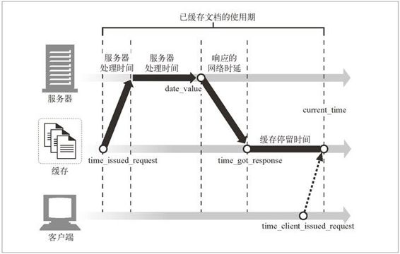

7.11 详细算法
HTTP 规范提供了一个详细，但有点儿含糊不清而且经常会让人混淆的算法，来计算文档的使用期以及缓存的新鲜度。本节会对 HTTP 的新鲜度计算算法进行详细的讨论（参见图 7-12 中那个“足够新鲜？”菱形框），并对此算法的动机进行解释。
本节最适用于那些研究缓存内部机制的人。为了便于说明 HTTP 规范中的内容，我们使用了 Perl 伪代码。如果对计算缓存过期时间的公式中那些繁复的细节不感兴趣的话，可以跳过这一节。
7.11.1 使用期和新鲜生存期
为了分辨已缓存文档是否足够新鲜，缓存只需要计算两个值：已缓存副本的使用期（age），和已缓存副本的新鲜生存期（freshness lifetime）。如果已缓存副本的时长小于新鲜生存期，就说明副本足够新鲜，可以使用。用 Perl 表示为：
$is_fresh_enough = ($age < $freshness_lifetime);
文档的使用期就是自从服务器将其发送出来（或者最后一次被服务器再验证）之后“老去”的总时间。1 缓存可能不知道文档响应是来自上游缓存，还是来自服务器的，所以它不能假设文档是最新的。它必须根据显式的 Age 首部（优先），或者通过对服务器生成的 Date 首部的处理，来确定文档的使用期。
1 记住，服务器上总是有所有文档的最新版本的。
文档的新鲜生存期表明，已缓存副本在经过多长时间之后，就会因新鲜度不足而无法再向客户端提供了。新鲜生存期考虑了文档的过期日期，以及客户端可能请求的任何新鲜度覆盖范围。
有些客户端可能愿意接受稍微有些过期的文档（使用 Cache-Control: max-stale 首部）。有些客户端可能无法接受会在近期过期的文档（使用 Cache-Control: min-fresh 首部）。缓存将服务器过期信息与客户端的新鲜度要求结合在一起，以确定最大的新鲜生存期。
7.11.2 使用期的计算
响应的使用期就是服务器发布响应（或服务器对其进行了再验证）之后经过的总时间。使用期包含了响应在因特网路由器和网关中游荡的时间，在中间节点缓存中存储的时间，以及响应在你的缓存中停留的时间。例 7-1 给出了使用期计算的伪代码。
例 7-1 HTTP/1.1 使用期计算算法计算了已缓存文档的总体使用期
$apparent_age = max(0, $time_got_response - $Date_header_value);
$corrected_apparent_age = max($apparent_age, $Age_header_value);
$response_delay_estimate = ($time_got_response - $time_issued_request);
$age_when_document_arrived_at_our_cache =
$corrected_apparent_age + $response_delay_estimate;
$how_long_copy_has_been_in_our_cache = $current_time - $time_got_response;
$age = $age_when_document_arrived_at_our_cache +
$how_long_copy_has_been_in_our_cache;
HTTP 使用期计算的细节有点儿棘手，但其基本概念很简单。响应到达缓存时，缓存可以通过查看 Date 首部或 Age 首部来判断响应已使用的时间。缓存还能记录下文档在本地缓存中的停留时间。把这些值加在一起，就是响应的总使用期。HTTP 用一些魔法对时钟偏差和网络时延进行了补偿，但基本计算非常简单：
$age = $age_when_document_arrived_at_our_cache +
$how_long_copy_has_been_in_our_cache;
缓存可以很方便地判断出已缓存副本已经在本地缓存了多长时间（这就是简单的簿记问题），但很难确定响应抵达缓存时的使用期，因为不是所有服务器的时钟都是同步的，而且我们也不知道响应到过哪里。完善的使用期计算算法会试着对此进行补偿。
表面使用期是基于 Date 首部的
如果所有的计算机都共享同样的、完全精确的时钟，已缓存文档的使用期就可以是文档的“表面使用期”——当前时间减去服务器发送文档的时间。服务器发送时间就是 Date 首部的值。最简单的起始时间计算可以直接使用表面时间：
$apparent_age = $time_got_response - $Date_header_value;
$age_when_document_arrived_at_our_cache = $apparent_age;
但并不是所有的时钟都实现了良好的同步。客户端和服务器时钟之间可能有数分钟的差别，如果时钟没有设置好的话，甚至会有数小时或数天的区别。2
2 HTTP 规范建议客户端、服务器和代理使用 NTP 这样的时间同步协议来强制使用统一的时间基准。
Web 应用程序，尤其是缓存代理，要做好与时间值有很大差异的服务器进行交互的准备。这种问题被称为时钟偏差（clock skew）——两台计算机时钟设置的不同。由于时钟偏差的存在，表面使用期有时会不太准确，而且有时会是负的。
如果使用期是负的，就将其设置为零。我们还可以对表面使用期进行完整性检查，以确定它没有大得令人不可思议，不过，实际上，表面使用期可能并没错。我们可能在与一个将文档缓存了很久的父缓存对话（缓存可能还存储了原始的 Date 首部）：
$apparent_age = max(0, $time_got_response - $Date_header_value);
$age_when_document_arrived_at_our_cache = $apparent_age;
要明确 Date 首部描述的是原始服务器的日期。代理和缓存一定不能修改这个日期！
逐跳使用期的计算
这样就可以去除时钟偏差造成的负数使用期了，但对时钟偏差给精确性带来的整体偏差，我们能做的工作很少。文档经过代理和缓存时，HTTP/1.1 会让每台设备都将相对使用期累加到 Age 首部中去，以此来解决缺乏通用同步时钟的问题。这种方式并不需要进行跨服务器的、端到端的时钟对比。
文档经过代理时，Age 首部值会随之增加。使用 HTTP/1.1 的应用程序应该在 Age 首部值中加上文档在每个应用程序和网络传输过程中停留的时间。每个中间应用程序都可以很容易地用本地时钟计算出文档的停留时间。
但响应链中所有的非 HTTP/1.1 设备都无法识别 Age 首部，它们会将首部未经修改地转发出去，或者将其删除掉。因此，在 HTTP/1.1 得到普遍应用之前，Age 首部都将是低估了的相对使用期。
除了基于 Date 计算出来的 Age 之外，还使用了相对 Age 值，而且不论是跨服务器的 Date 值，还是计算出来的 Age 值都可能被低估，所以会选择使用估计出的两个 Age 值中最保守的那个（最保守的值就是最老的 Age 值）。使用这种方式，HTTP 就能容忍 Age 首部存在的错误，尽管这样可能会搞错究竟哪边更新鲜：
$apparent_age = max(0, $time_got_response - $Date_header_value);
$corrected_apparent_age = max($apparent_age, $Age_header_value);
$age_when_document_arrived_at_our_cache = $corrected_apparent_age;
对网络时延的补偿
事务处理可能会很慢。这是使用缓存的主要动因。但对速度非常慢的网络，或者那些过载的服务器来说，如果文档在网络或服务器中阻塞了很长时间，相对使用期的计算可能会极大地低估文档的使用期。
Date 首部说明了文档是在什么时候离开原始服务器的，3 但并没有说明文档在到缓存的传输过程中花费了多长时间。如果文档的传输经过了一长串的代理和父缓存，网络时延可能会相当大。4
3 注意，如果文档来自一个父缓存，而不是原始服务器，Date 首部反映的仍是原始服务器，而不是父 缓存上的日期。
4 实际上，这个时延不会高于几十分之一秒（不然用户就会放弃），但即使是对生存期很短的对象来说， HTTP 的设计者也希望使用尽可能精确的过期时间。
没有什么简便的方法可以用来测量从服务器到缓存的单向网络时延，但往返时延则比较容易测量。缓存知道它请求文档的时间，以及文档抵达的时间。HTTP/1.1 会在 这些网络时延上加上整个往返时延，以便对其进行保守地校正。这个从缓存到服务器再到缓存的时延高估了从服务器到缓存的时延，但它是保守的。如果出错了，它只会使文档看起来比实际使用期要老，并引发不必要的再验证。计算是这样进行的：
$apparent_age = max(0, $time_got_response - $Date_header_value);
$corrected_apparent_age = max($apparent_age, $Age_header_value);
$response_delay_estimate = ($time_got_response - $time_issued_request);
$age_when_document_arrived_at_our_cache =
$corrected_apparent_age + $response_delay_estimate;
7.11.3 完整的使用期计算算法
上一节说明了当 HTTP 所承载的文档抵达缓存时，如何计算其使用期。只要将这条响应存储到缓存中去，它就会进一步老化。当对缓存中文档的请求到达时，我们需要知道文档在缓存中停留了多长的时间，这样才能计算文档现在的使用期：
$age = $age_when_document_arrived_at_our_cache +
$how_long_copy_has_been_in_our_cache;
嗒嗒！这样就有了例 7-1 中给出的完整的 HTTP/1.1 使用期计算算法。这就是简单的簿记问题了——我们知道了文档是什么时候到达缓存的（$time_got_reponse），也知道当前请求是什么时候到达的（刚才），这样停留时间就是两者之差了。所有这些都以图形方式显示在图 7-18 中了。

图 7-18 已缓存文档的使用期包括在网络和缓存中停留的时间
7.11.4 新鲜生存期计算
回想一下，我们是在想办法弄清楚已缓存文档是否足够新鲜，是否可以提供给客户端。要回答这个问题，就必须确定已缓存文档的使用期，并根据服务器和客户端限制来计算新鲜生存期。我们刚刚解释了如何计算使用期；现在我们来看看新鲜生存期的计算。
文档的新鲜生存期说明了在文档不再新鲜，无法提供给某个特定的客户端之前能够停留多久。新鲜生存期取决于服务器和客户端的限制。服务器上可能有一些与文档的出版变化率有关的信息。那些非常稳定的已归档报告可能会在数年内保持新鲜。期刊可能只在下一期的出版物出来之前的剩余时间内有效——下一周，或是明早 6 点。
客户端可能有些其他指标。如果稍微有些过期的内容速度更快的话，它们可能也愿意接受，或者它们可能希望接收最新的内容。缓存是为用户服务的。必须要满足他们的要求。
7.11.5 完整的服务器——新鲜度算法
例 7-2 给出了一个用于计算服务器新鲜度限制的 Perl 算法。它会返回文档仍由服务器提供时所能到达的最大使用期。
例 7-2 服务器新鲜度限制的计算
sub server_freshness_limit
{
local($heuristic,$server_freshness_limit,$time_since_last_modify);
$heuristic = 0;
if ($Max_Age_value_set)
{
$server_freshness_limit = $Max_Age_value;
}
elseif ($Expires_value_set)
{
$server_freshness_limit = $Expires_value - $Date_value;
}
elseif ($Last_Modified_value_set)
{
$time_since_last_modify = max(0, $Date_value -
$Last_Modified_value);
$server_freshness_limit = int($time_since_last_modify *
$lm_factor);
$heuristic = 1;
}
else
{
$server_freshness_limit = $default_cache_min_lifetime;
$heuristic = 1;
}
if ($heuristic)
{
if ($server_freshness_limit > $default_cache_max_lifetime)
{ $server_freshness_limit = $default_cache_max_lifetime; }
if ($server_freshness_limit < $default_cache_min_lifetime)
{ $server_freshness_limit = $default_cache_min_lifetime; }
}
return($server_freshness_limit);
}
现在，我们来看看客户端怎样修正服务器为文档指定的使用期限制。例 7-3 显示了一个 Perl 算法，此算法获取了服务器的新鲜度限制并根据客户端的限制对其进行修改。它会返回一个最大使用期，这是在无需再次验证，仍由缓存提供文档的前提下，文档的最大生存时间。
例 7-3 客户端新鲜度限制的计算
sub client_modified_freshness_limit
{
$age_limit = server_freshness_limit( ); ## From Example 7-2
if ($Max_Stale_value_set)
{
if ($Max_Stale_value == $INT_MAX)
{ $age_limit = $INT_MAX; }
else
{ $age_limit = server_freshness_limit( ) + $Max_Stale_value; }
}
if ($Min_Fresh_value_set)
{
$age_limit = min($age_limit, server_freshness_limit( ) -
$Min_Fresh_value_set);
}
if ($Max_Age_value_set)
{
$age_limit = min($age_limit, $Max_Age_value);
}
}
整个进程中包含两个变量：文档的使用期及其新鲜度限制。如果使用期小于新鲜度限制，就说明文档“足够新鲜”。例 7-3 中的算法只是考虑了服务器的新鲜度限制，并根据附加的客户端限制对其进行了调整。希望通过本节的介绍能使在 HTTP 规范中描述的比较微妙的过期算法更清晰一些。